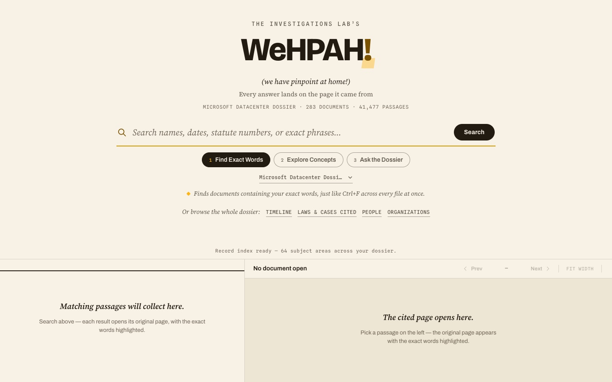
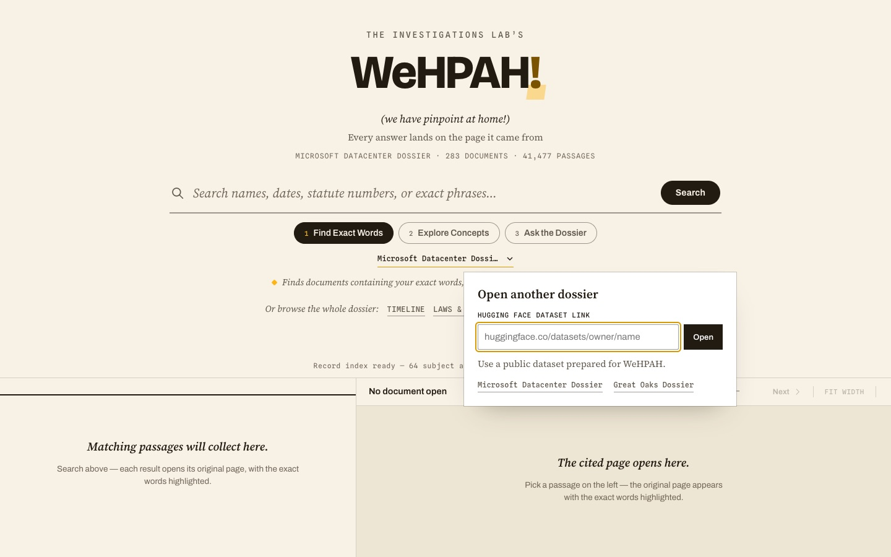
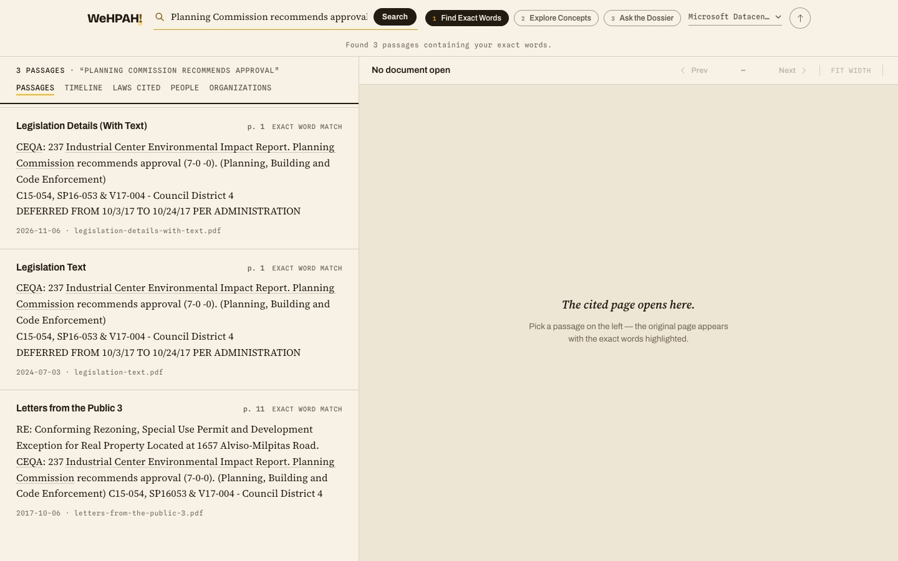
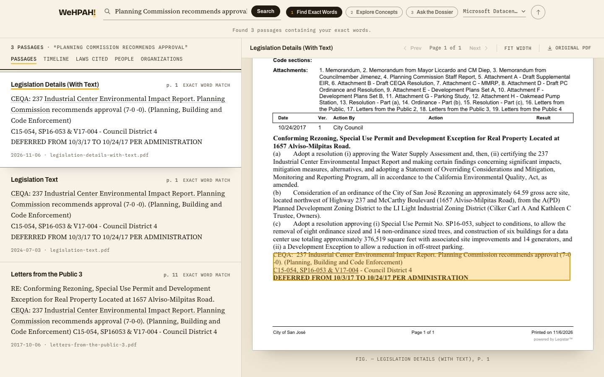
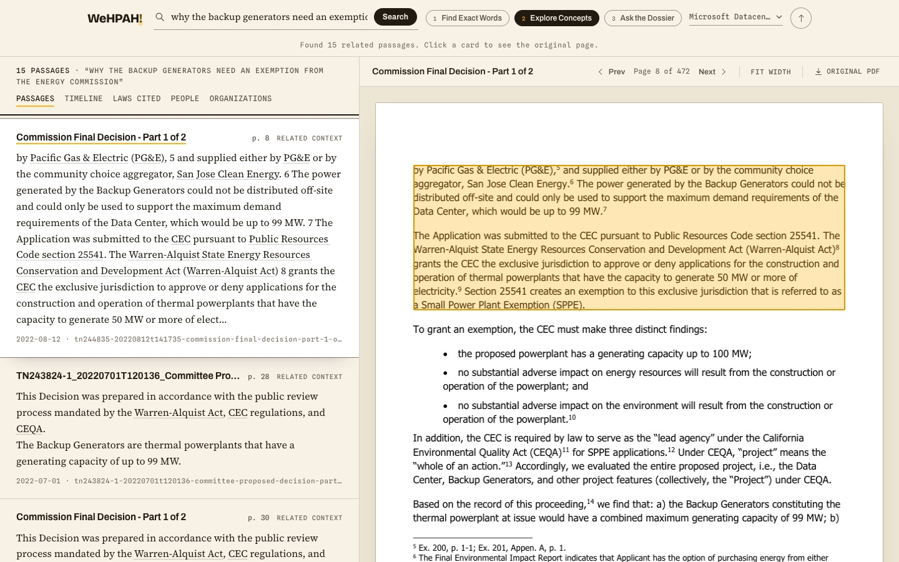
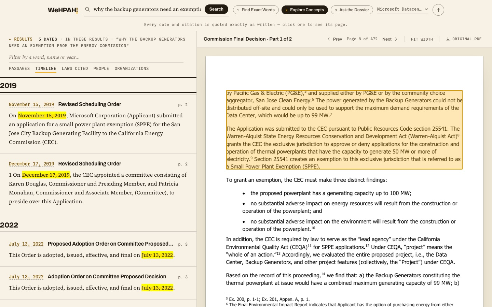
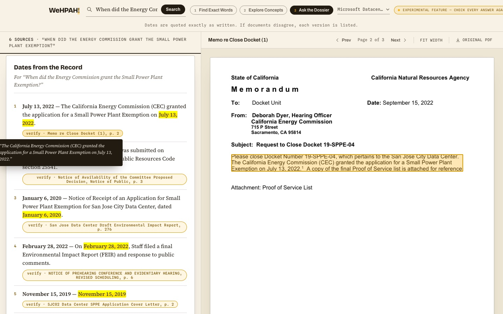
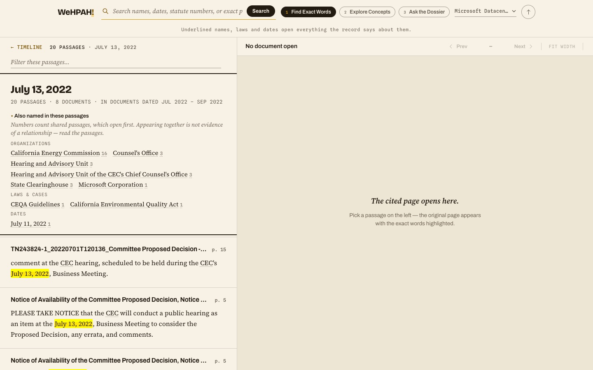
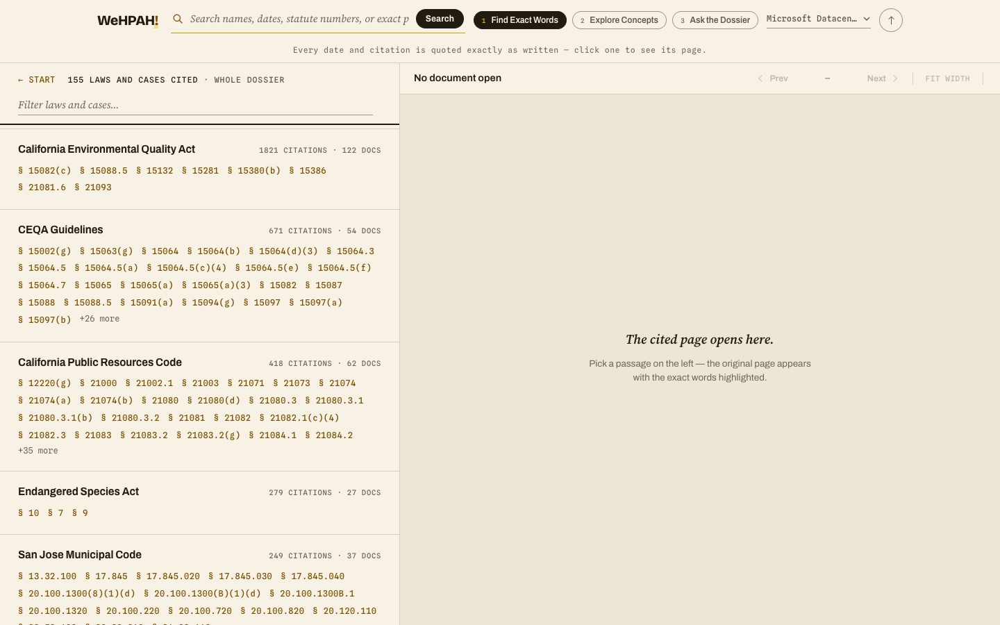
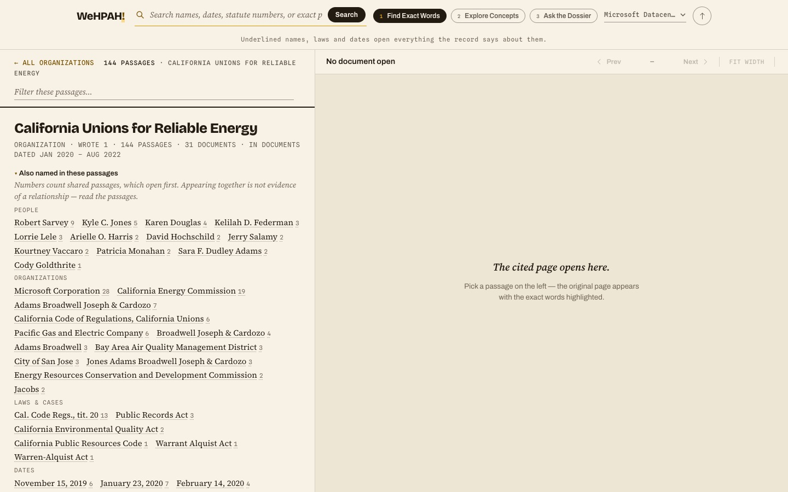

The Investigations Lab · Tutorial
How to use WeHPAH!
This tutorial teaches every part of WeHPAH! through one real question: how did Microsoft's data center in San José get approved?
WeHPAH! searches a collection of public documents, which we call a dossier. Every result leads back to the original page, and a gold box marks the exact words. You never need to trust a summary: you can always read the source.
In this tutorial, you follow the planning record for Microsoft's San José data center, which the documents call SJC02 or the San Jose City Data Center. The site sits at 1657 Alviso-Milpitas Road. As you learn each tool, you also uncover one part of the story. The last section puts the whole timeline together.
You only need a web browser. You do not need to install anything or create an account.
Step 1Open the site and choose a dossier
Go to hrcberkeley.github.io/wepah-DCI. The cover page shows the name of the open dossier and counts its documents and passages. A passage is a paragraph, a table or a figure from one page.

The cover has four parts:
- The search box, where you type your question or words.
- Three search modes: Find Exact Words, Explore Concepts and Ask the Dossier. The sentence under the buttons explains the mode you chose.
- The dossier menu, which switches to another collection.
- The browse links, which list every date, law, person and organization in the dossier.
To switch dossiers, click the dossier name under the mode buttons. Pick a dossier from the list, or paste the link of a public Hugging Face dataset that someone prepared for WeHPAH!. For this tutorial, keep the Microsoft Datacenter Dossier.

Step 2Find exact words
Start with what you know. A city usually approves a large project after its Planning Commission makes a recommendation, so search for that phrase.
- Make sure 1. Find Exact Words is selected.
- Type
Planning Commission recommends approvalin the search box. - Press Enter or click Search.
The cover folds into a slim bar, and the matching passages appear on the left. Each entry shows the document title, the page number, the passage text and, at the bottom, the document date and file name. The tag Exact word match confirms that the passage contains your words.

Exact search works best for names, case numbers, statute numbers, dates and quoted phrases. It ignores capital letters, but it does not find other spellings or synonyms. Use Explore Concepts when you do not know the exact wording.
Step 3Check the original page
Click the title of the first result, Legislation Details (With Text). The original PDF page opens on the right, and a gold box marks the passage.

What we found. The City of San José record for 10/24/2017 lists a City Council item for the rezoning, the Special Use Permit and the Development Exception at 1657 Alviso-Milpitas Road. The permit allows six data center buildings and 14 generators. The item notes that the Planning Commission recommended approval by a vote of 7-0-0.
The bar above the page has these controls:
- Prev and Next move through the pages of the document.
- Fit Width changes the zoom to fit width, 100% or 150%.
- Original PDF downloads the complete document.
Always read the page. The date under a result comes from the document or its file. For this result, it reads 2026-11-06, which is the day someone printed the page from the city website. The page itself shows the real meeting date, 10/24/2017. Trust the page, not the label.
You also see underlined words inside the passages. Each underlined name, law or date is a link. Click one to see everything the dossier says about it. Step 7 and Step 9 show these pages.
Step 4Explore concepts
The 2017 city approval is not the end of the story. Many later documents come from the California Energy Commission. To find out why, describe the question in your own words.
- Click 2. Explore Concepts.
- Type
why the backup generators need an exemption from the Energy Commission. - Press Enter.
The first concept search takes a little longer, because your browser prepares the search on your own computer. Later searches are faster.
Concept search finds passages with a similar meaning, even when they use different words. The tag tells you how close each passage is: Strong conceptual match or Related context. Click the first title to open its page.

What we found. The data center's backup generators can produce up to 99 MW. The Warren-Alquist Act gives the Energy Commission sole authority to approve or deny any thermal power plant of 50 MW or more. Public Resources Code section 25541 creates an exception for plants up to 100 MW, called a Small Power Plant Exemption (SPPE). Microsoft applied for this exemption. To grant it, the Commission must find that the project will not cause substantial harm to energy resources or the environment.
Step 5Put your results in order
Above the results, a row of tabs reads Passages · Timeline · Laws cited · People · Organizations. These tabs show the same results in another form. Click Timeline to list every date in your results, from the oldest to the newest.

What we found. Microsoft submitted the exemption application on November 15, 2019. On December 17, 2019, the Commission appointed a committee to preside over it. The adoption order became final on July 13, 2022.
Use the filter box above the tabs to narrow any list by a word, a name or a year. Click ← Results to go back to the passages.
Step 6Ask the dossier a question
3. Ask the Dossier answers a direct question with sentences taken word for word from the documents. This mode is experimental, and the site says so in a gold label. Treat every answer as a lead and check its source.
- Click 3. Ask the Dossier.
- Type
When did the Energy Commission grant the Small Power Plant Exemption? - Press Enter.
A white panel lists numbered answers. Under each answer, a gold verify button names the document and page. Point to the button to read the exact quotation. Click it to open the page with the passage marked.

What we found. A memo from Hearing Officer Deborah Dyer, dated September 15, 2022, asks to close Docket 19-SPPE-04. It states that the Commission granted the exemption on July 13, 2022.
How the answers stay honest. WeHPAH! shows an answer only when its quotation appears word for word in the cited passage. It drops any sentence that it cannot match. When documents disagree, it lists each version. You still need to read the page, because a sentence can be accurate and still lack context.
Step 7Open everything about one day
Click any underlined date, such as July 13, 2022, to open a page for that day. The page counts the passages and documents that mention the date, and it lists the people, organizations and laws named in those passages. The passages follow below.

The numbers next to each name count shared passages. A shared passage only means that two things appear together. It does not prove a relationship, so read the passages before you draw a conclusion.
To see every date in the dossier, click Timeline on the cover.
Step 8Browse the laws and cases cited
On the cover, click Laws & cases cited. WeHPAH! lists every law, regulation and court case that the documents cite, with the number of citations and documents. Click a law or one of its sections to read every passage that cites it.

What we found. The California Environmental Quality Act (CEQA) is the most cited law, with 1,821 citations in 122 documents. Environmental review drove most of this record: the Commission had to prepare an Environmental Impact Report before it could grant the exemption.
Step 9Follow a person or an organization
On the cover, click People or Organizations. The lists put the most frequently named first. Each entry shows its role when the documents state one, such as the applicant or the petitioner. Click a name to open its page.

What we found. California Unions for Reliable Energy (CURE) petitioned to join the case as a party on January 23, 2020. Its name appears in 31 documents between January 2020 and August 2022. A later filing reports that CURE filed no comments on the Environmental Impact Report and was no longer participating.
Step 10Share what you found
Every view has its own web address. Copy the address from your browser to share a search, a date, a law or a name with a colleague. They see the same view when they open the link. The links in this tutorial work the same way.
A few more tips:
- Click the arrow button at the right of the slim bar, or press Esc in the search box, to bring back the full cover.
- Click WeHPAH! at the top left to start over.
- Use your browser's Back button to return to the previous view.
- Click Original PDF to keep a copy of a source document for your files.
What the record shows
The steps above trace the planning process in two stages. First, the City of San José rezoned the land and issued a Special Use Permit. Second, the California Energy Commission reviewed the backup generators, prepared an Environmental Impact Report and granted the exemption. Each row links to its source in WeHPAH!, so you can check every date.
| Date | Event |
|---|---|
| Oct 11, 2017 | The San José Planning Commission holds a hearing on the 237 Industrial Center project and recommends approval, 7-0-0. Source |
| Oct 24, 2017 | The City Council takes up the rezoning, the Special Use Permit and the Development Exception for 1657 Alviso-Milpitas Road. Source |
| Nov 15, 2019 | Microsoft applies to the Energy Commission for a Small Power Plant Exemption (Docket 19-SPPE-04). Source |
| Dec 17, 2019 | The Commission appoints a committee to preside over the application. Source |
| Jan 23, 2020 | California Unions for Reliable Energy petitions to intervene. Source |
| Feb 2021 | Commission staff issue a Notice of Preparation and hold a public scoping meeting for an Environmental Impact Report. Source |
| Dec 23, 2021 | Staff publish the Draft Environmental Impact Report for public comment. Source |
| Feb 28, 2022 | Staff file the Final Environmental Impact Report and responses to comments. Source |
| May 26, 2022 | The committee holds an evidentiary hearing. Source |
| Jul 1, 2022 | The committee publishes its Proposed Decision. Source |
| Jul 13, 2022 | The Commission grants the Small Power Plant Exemption. Source |
| Sep 15, 2022 | The hearing officer asks to close the docket. Source |
Use this table as a starting point, not as a finding. Open each source, read the page and note the document and page number in your own work.